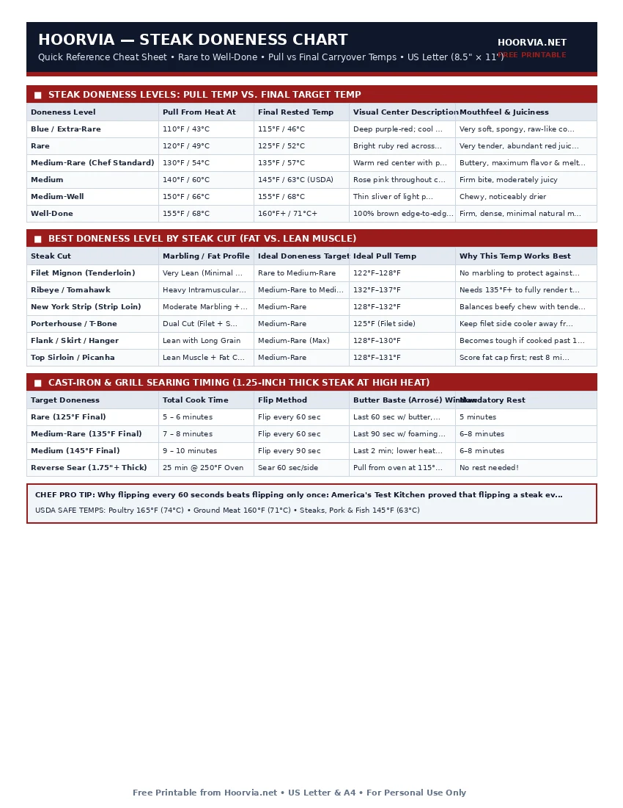

Steak Doneness Chart: Internal Temps, Pull Temps & Touch Test
Cooking a high-end steak to perfection comes down to a 5°F window. Because thick steaks continue rising in temperature by 5°F to 7°F while resting on your cutting board, pulling a steak when your thermometer reads the final target temperature guarantees overcooking. Use this steakhouse calibration chart to pull every cut at the exact right moment.
| Doneness Level | Pull From Heat At | Final Rested Temp | Visual Center Description | Mouthfeel & Juiciness |
|---|---|---|---|---|
| Blue / Extra-Rare | 110°F / 43°C | 115°F / 46°C | Deep purple-red; cool center | Very soft, spongy, raw-like core |
| Rare | 120°F / 49°C | 125°F / 52°C | Bright ruby red across 75% of center | Very tender, abundant red juices |
| Medium-Rare (Chef Standard) | 130°F / 54°C | 135°F / 57°C | Warm red center with pink halo | Buttery, maximum flavor & melted fat |
| Medium | 140°F / 60°C | 145°F / 63°C (USDA) | Rose pink throughout center | Firm bite, moderately juicy |
| Medium-Well | 150°F / 66°C | 155°F / 68°C | Thin sliver of light pink in middle | Chewy, noticeably drier |
| Well-Done | 155°F / 68°C | 160°F+ / 71°C+ | 100% brown edge-to-edge; zero pink | Firm, dense, minimal natural moisture |
| Steak Cut | Marbling / Fat Profile | Ideal Doneness Target | Ideal Pull Temp | Why This Temp Works Best |
|---|---|---|---|---|
| Filet Mignon (Tenderloin) | Very Lean (Minimal fat) | Rare to Medium-Rare | 122°F–128°F | No marbling to protect against drying past 135°F |
| Ribeye / Tomahawk | Heavy Intramuscular Fat | Medium-Rare to Medium | 132°F–137°F | Needs 135°F+ to fully render thick eye fat |
| New York Strip (Strip Loin) | Moderate Marbling + Rim | Medium-Rare | 128°F–132°F | Balances beefy chew with tender interior |
| Porterhouse / T-Bone | Dual Cut (Filet + Strip) | Medium-Rare | 125°F (Filet side) | Keep filet side cooler away from direct burner |
| Flank / Skirt / Hanger | Lean with Long Grain | Medium-Rare (Max) | 128°F–130°F | Becomes tough if cooked past 140°F; slice thin |
| Top Sirloin / Picanha | Lean Muscle + Fat Cap | Medium-Rare | 128°F–131°F | Score fat cap first; rest 8 minutes before slicing |
| Target Doneness | Total Cook Time | Flip Method | Butter Baste (Arrosé) Window | Mandatory Rest |
|---|---|---|---|---|
| Rare (125°F Final) | 5 – 6 minutes | Flip every 60 sec | Last 60 sec w/ butter, garlic & thyme | 5 minutes |
| Medium-Rare (135°F Final) | 7 – 8 minutes | Flip every 60 sec | Last 90 sec w/ foaming herb butter | 6–8 minutes |
| Medium (145°F Final) | 9 – 10 minutes | Flip every 90 sec | Last 2 min; lower heat to medium | 6–8 minutes |
| Reverse Sear (1.75"+ Thick) | 25 min @ 250°F Oven | Sear 60 sec/side | Pull from oven at 115°F, sear to 130°F | No rest needed! |
Printable Cheat Sheet Preview (US Letter & A4)
High-contrast, ink-saving layout designed for kitchen binders, grill stations, and refrigerator doors. No sign-up required.

The Science of Steak Carryover Cooking, Marbling & Resting
When you sear a steak over a 500°F cast-iron skillet or charcoal grill grate, a steep thermal gradient forms between the sizzling 350°F exterior crust and the cool 130°F center. The moment you remove the steak from the pan, physics takes over: heat flows from the hot outer shell into the cooler core until the steak reaches thermal equilibrium. On a standard 1.25-inch ribeye or strip, this carryover cooking raises the internal temperature by 5°F to 7°F over 6 minutes. On a thick 2-inch bone-in cowboy steak, carryover can climb by 8°F to 10°F.
Why Ribeye Needs Higher Heat Than Filet Mignon
Many diners order every steak at the exact same doneness, but professional grill masters tailor the internal temperature to the cut's intramuscular fat (marbling) content:
- Lean Cuts (Filet Mignon, Chateaubriand, Top Round): Because tenderloin comes from the non-weight-bearing psoas major muscle, it is naturally fork-tender but contains almost zero fat. If cooked past 135°F, the muscle fibers squeeze out their water with no melted fat to lubricate the bite. Pull filet mignon at 123°F–128°F.
- Heavily Marbled Cuts (Ribeye, Wagyu, Chuck Eye): Waxy white beef fat begins rendering into flavorful liquid tallow between 130°F and 140°F. Pulling a ribeye at 118°F (Rare) leaves unmelted, chewy white fat veins intact. Pulling a ribeye at 132°F–136°F (upper Medium-Rare) melts that marbling directly into the meat fibers.
The Finger-to-Thumb Touch Test vs. Instant-Read Thermometers
Line cooks often estimate doneness by pressing the fleshy pad at the base of their thumb: touching thumb to index finger mimics Rare, middle finger mimics Medium-Rare, ring finger mimics Medium, and pinky mimics Well-Done. However, because a prime ribeye feels softer at 140°F than a choice sirloin feels at 125°F, always verify with a digital thermocouple inserted horizontally through the side of the steak.
Frequently Asked Questions
Is the red liquid on my steak plate blood?
No! Almost all blood is removed during commercial processing. The red liquid is 'myoglobin,' an oxygen-binding protein stored inside muscle fibers that turns red when mixed with water and natural meat juices.
Should I let steaks come to room temperature for 1 hour before cooking?
Tests show leaving a thick steak on the counter for 1 hour only raises its internal core temperature by about 4°F–6°F. Instead, focus on patting the exterior bone-dry with paper towels and salting 45 minutes ahead (or overnight on a wire rack in the fridge).
Why did my steak get a thick grey ring around the edge?
A thick grey band happens when you leave the steak on one side for 4–5 minutes over excessive heat or start with a wet surface. Pat the steak dry and flip it every 60 seconds so neither side overcooks underneath the sear.
How do I slice flank or skirt steak so it isn't chewy?
Look closely at the parallel muscle fibers running along the length of the meat. Slice perpendicular (90 degrees across) to those fibers at a 45-degree bias into thin 1/4-inch strips.